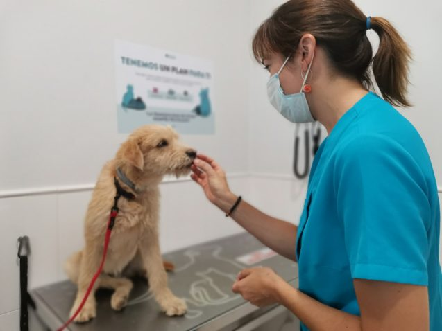

SALVANDO VIDAS
Por la conciencia de la necesidad de servir.
“LA VIDA DE LOS ANIMALES VALE LO MISMO QUE LA TUYA”

En la Clínica Veterinaria WORLD ANIMALS tu mascota tendrá los servicios necesarios para la preservación de su salud, atendemos de manera integral en cada una de las afectaciones que lo aquejen, con el objetivo de cuidar su bienestar. Sabemos lo importante que es para ti lograr que puedan tener y disfrutar de muchos momentos juntos.
Somos una clínica veterinaria en donde encontrarás un servicio integral. Nuestro personal de trabajo y equipo colaborador brindará la mejor atención médica a tu mascota
Ofrecemos todos los servicios veterinarios que tu mascota necesita
Rayos x digitales
Ultrasonido
Laboratorio clínico
Cirugía
Mascotería
Estética
Urgencias
Ortopedia
Atención a Fauna Silvestre

Nuestra prioridad es brindar soluciones eficaces para mejorar la salud de tu mascota ante cualquier malestar para que tenga una vida sana y feliz junto a ti. Además, manejamos el equipo necesario para realizar cirugías de emergencia y procedimientos eficaces en caso de ser necesario.
En nuestra clínica veterinaria tratamos a cada paciente lo mejor posible para evitar que se estrese o sufra durante su visita, ya que sabemos que para ti lo más importante es su comodidad y salud. También contamos con un stock de productos ideales para el cuidado o diversión de perros y gatos, como correas, collares, juguetes y más.